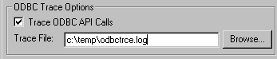

This section describes how to use the ODBC Driver Manager Trace tool.
You can use the ODBC Driver Manager Trace tool to trace a connection to any ODBC data source that you access in PowerBuilder through the ODBC interface.
Unlike the Database Trace tool, the ODBC Driver Manager Trace tool cannot trace connections through one of the native database interfaces.
ODBC Driver Manager Trace records information about ODBC API calls (such as SQLDriverConnect, SQLGetInfo, and SQLFetch) made by PowerBuilder while connected to an ODBC data source. It writes this information to a default log file named SQL.LOG or to a log file that you specify.
The information from ODBC Driver Manager Trace, like Database Trace, can help you:
Use ODBC Driver Manager Trace instead of the Database Trace tool if you want more detailed information about the ODBC API calls made by PowerBuilder.
 Performance considerations Turning on ODBC Driver Manager Trace can slow your performance
while working in PowerBuilder. Therefore, use ODBC Driver Manager
Trace for debugging purposes only and keep it turned off when you
are not debugging.
Performance considerations Turning on ODBC Driver Manager Trace can slow your performance
while working in PowerBuilder. Therefore, use ODBC Driver Manager
Trace for debugging purposes only and keep it turned off when you
are not debugging.
PowerBuilder writes ODBC Driver Manager Trace output to a default log file named SQL.LOG or to a log file that you specify. The default location of SQL.LOG is in your root directory.
By default, ODBC Driver Manager Trace is turned off in PowerBuilder. You can start it in order to trace your ODBC connection in two ways:
To start ODBC Driver Manager Trace in the PowerBuilder development environment, edit the database profile for the connection you want to trace, as described in the following procedure.
 To start ODBC Driver Manager Trace by editing
the database profile:
To start ODBC Driver Manager Trace by editing
the database profile:
Open the Database Profile Setup-ODBC dialog box for the ODBC connection you want to trace.
On the Options tab, select the Trace ODBC API Calls check box.
(Optional) To specify a log file where you want PowerBuilder to write the output of ODBC Driver Manager Trace, type the path name in the Trace File box
or
(Optional) Click Browse to display the pathname of an existing log file in the Trace File box.
By default, if the Trace ODBC API Calls check box is selected and no trace file is specified, PowerBuilder sends ODBC Driver Manager Trace output to the default SQL.LOG file.

Click OK or Apply
or
Right-click on the connected database and select Re-connect from the drop-down menu in the Database Profiles dialog box.
The Database Profiles dialog box displays with the name of the edited profile highlighted.
PowerBuilder saves your settings in the database profile entry
in the registry in the HKEY_CURRENT_USER\Software\Sybase\
PowerBuilder\10.5\DatabaseProfiles key.
For example, here is the relevant portion of a database profile entry for an ODBC data source named Employee. The settings that start ODBC Driver Manager Trace (corresponding to the ConnectOption DBParm parameter) are emphasized.
DBMS "ODBC"
...
DbParm "ConnectString='DSN=Emloyee;UID=dba;
PWD=00c61737',ConnectOption='SQL_OPT_TRACE,SQL_OPT_TRACE_ON;SQL_OPT_TRACEFILE,C:\Temp\odbctrce.log'"
Click Connect in the Database Profiles dialog box to connect to the database
or
Right-click on the connected database and select Re-connect from the drop-down menu in the Database Profiles dialog box.
PowerBuilder connects to the database, starts tracing the ODBC connection, and writes output to the log file you specified.
To start ODBC Driver Manager Trace in a PowerBuilder application, you must specify certain values for the ConnectOption DBParm parameter in the appropriate script. For example, you might include them in the script that opens the application.
You can specify the required ConnectOption values in a PowerBuilder script by:
For more about using Transaction objects to communicate with a database in a PowerBuilder application, see Application Techniques .
ConnectOption includes several parameters, two of which control the operation of ODBC Driver Manager Trace for any ODBC-compatible driver you are using in PowerBuilder.
| Parameter | Description |
|---|---|
| SQL_OPT_TRACE | Purpose Starts or stops ODBC Driver Manager Trace in PowerBuilder. Values The values you can specify are:
|
| SQL_OPT_TRACEFILE | Purpose Specifies the name of the trace file where you want to send the output of ODBC Driver Manager Trace. PowerBuilder appends the output to the trace file you specify until you stop the trace. To display the trace file, you can use the File Editor (in PowerBuilder) or any text editor (outside PowerBuilder). Values You can specify any filename for the trace file, following the naming conventions of your operating system. By default, if tracing is on and you have not specified a trace file, PowerBuilder sends ODBC Driver Manager Trace output to a file named SQL.LOG. For information about the location of SQL.LOG on different platforms, see "About ODBC Driver Manager Trace". |
The easiest way to start ODBC Driver Manager Trace in a PowerBuilder application script is to copy the PowerScript ConnectString DBParm syntax from the Preview tab in the Database Profile Setup - ODBC dialog box into your script, modifying the default Transaction object name (SQLCA) if necessary.
As you complete the Database Profile Setup dialog box in the development environment, PowerBuilder generates the correct connection syntax on the Preview tab. Therefore, copying the syntax directly from the Preview tab into your script ensures that it is accurate.
 To copy ConnectOption syntax from the Preview
tab into your script:
To copy ConnectOption syntax from the Preview
tab into your script:
On the Options tab in the Database Profile Setup - ODBC dialog box for your connection, select the Trace ODBC API Calls check box and (optionally) specify a log file in the Trace File box to start ODBC Driver Manager Trace.
Click Apply to save your changes to the Options tab without closing the dialog box.
Click the Preview tab.
The correct PowerScript syntax for ODBC Driver Manager Trace and other selected options displays in the Database Connection Syntax box.
The following example shows the PowerScript syntax that starts ODBC Driver Manager Trace and sends output to the file C:\TEMP\ODBCTRCE.LOG.
// Profile Employee
SQLCA.DBMS = "ODBC"
SQLCA.AutoCommit = False
SQLCA.DBParm = "Connectstring='DSN=Employee',
ConnectOption='SQL_OPT_TRACE,SQL_OPT_TRACE_ON;
SQL_OPT_TRACEFILE,c:\temp\odbctrce.log'"
Select the SQLCA.DBParm line and any other syntax you want to copy to your script and click Copy.
PowerBuilder copies the selected text to the clipboard.
Paste the selected text from the Preview tab into your script, modifying the default Transaction object name (SQLCA) if necessary.
Another way to start ODBC Driver Manager Trace in a PowerBuilder application script is to include the ConnectOption parameters that control tracing as values for the DBParm property of the Transaction object.
 To start ODBC Driver Manager Trace by setting
the DBParm property:
To start ODBC Driver Manager Trace by setting
the DBParm property:
In your application script, set the SQL_OPT_TRACE and (optionally) SQL_OPT_TRACEFILE ConnectOption parameters to start the trace and to specify a nondefault trace file, respectively.
For example, the following statement starts ODBC Driver Manager Trace in your application and sends output to a file named MYTRACE.LOG. Insert a comma to separate the ConnectString and ConnectOption values.
This example assumes you are using the default Transaction object SQLCA, but you can also define your own Transaction object.
SQLCA.DBParm="ConnectString='DSN=Test;UID=PB;
PWD=xyz',ConnectOption='SQL_OPT_TRACE,
SQL_OPT_TRACE_ON;SQL_OPT_TRACEFILE,C:\TRC.LOG'"
As an alternative to setting the DBParm property in your PowerBuilder application script, you can use the PowerScript ProfileString function to read DBParm values from a specified section of an external text file, such as an application-specific initialization file.
This assumes that the DBParm value read from your initialization file includes the ConnectOption parameter to start ODBC Driver Manager Trace, as shown in the preceding example.
 To start ODBC Driver Manager Trace by reading
DBParm values from an external text file:
To start ODBC Driver Manager Trace by reading
DBParm values from an external text file:
Use the following PowerScript syntax to specify the ProfileString function with the DBParm property:
SQLCA.dbParm = ProfileString(file, section, variable,
default_value)
For example, the following statement in a PowerBuilder script reads the DBParm values from the [Database] section of the APP.INI file:
SQLCA.dbParm =
ProfileString("APP.INI","Database","DBParm","")Once you start tracing an ODBC connection with ODBC Driver Manager Trace, PowerBuilder continues sending trace output to the log file until you stop tracing. After you stop tracing as described in the following sections, you must reconnect to have the changes take effect.
 To stop ODBC Driver Manager Trace by editing a
database profile:
To stop ODBC Driver Manager Trace by editing a
database profile:
Open the Database Profile Setup - ODBC dialog box for the connection you are tracing.
For instructions, see "Starting ODBC Driver Manager Trace in the development environment".
On the Options tab, clear the Trace ODBC API Calls check box.
If you supplied the pathname of a log file in the Trace File box, you can leave it specified in case you want to restart tracing later.
Click OK in the Database Profile Setup - ODBC dialog box.
The Database Profiles dialog box displays, with the name of the edited profile highlighted.
Click Connect in the Database Profiles dialog box
or
Right-click on the connected database and select Re-connect from the drop-down menu in the Database Profiles dialog box.
PowerBuilder connects to the database and stops tracing the connection.
To stop ODBC Driver Manager Trace in a PowerBuilder application script, you must change the SQL_OPT_TRACE ConnectOption parameter to SQL_OPT_TRACE_OFF. You can do this by:
One way to change the ConnectOption value in a PowerBuilder script is to edit the DBParm property of the Transaction object.
 To stop ODBC Driver Manager Trace by editing the
DBParm property:
To stop ODBC Driver Manager Trace by editing the
DBParm property:
In your application script, edit the DBParm property of the Transaction object to change the value of the SQL_OPT_TRACE ConnectOption parameter to SQL_OPT_TRACE_OFF.
For example, the following statement starts ODBC Driver Manager Trace in your application and sends the output to a file named MYTRACE.LOG. (This example assumes you are using the default Transaction object SQLCA, but you can also define your own Transaction object.)
SQLCA.DBParm="ConnectString='DSN=Test;UID=PB;
PWD=xyz',ConnectOption='SQL_OPT_TRACE,
SQL_OPT_TRACE_ON;SQL_OPT_TRACEFILE,C:\TRC.LOG'"
Here is how the same statement should look after you edit it to stop ODBC Driver Manager Trace. (You can leave the name of the trace file specified in case you want to restart tracing later.)
SQLCA.DBParm="ConnectString='DSN=Test;UID=PB;
PWD=xyz',ConnectOption='SQL_OPT_TRACE,
SQL_OPT_TRACE_OFF;SQL_OPT_TRACEFILE,C:\TRC.LOG'"
As an alternative to editing the DBParm property in your PowerBuilder application script, you can use the PowerScript ProfileString function to read DBParm values from a specified section of an external text file, such as an application-specific initialization file.
This assumes that the DBParm value read from your initialization file sets the value of SQL_OPT_TRACE to SQL_OPT_TRACE_OFF, as shown in the preceding example.
You can display the contents of the ODBC Driver Manager Trace log file anytime during a PowerBuilder session.
 Location of SQL.LOG For information about where to find the default SQL.LOG file, see "About ODBC Driver
Manager Trace".
Location of SQL.LOG For information about where to find the default SQL.LOG file, see "About ODBC Driver
Manager Trace".
 To view the contents of the log file:
To view the contents of the log file:
Open SQL.LOG or the log file you specified in one of the following ways:
 Leaving the log file open If you leave the log file open as you work in PowerBuilder,
ODBC Driver Manager Trace does not update it.
Leaving the log file open If you leave the log file open as you work in PowerBuilder,
ODBC Driver Manager Trace does not update it.
This section shows a partial example of output from ODBC Driver Manager Trace to give you an idea of the information it provides. The example is part of the trace on an ODBC connection to the EAS Demo DB.
For more about a particular ODBC API call, see your ODBC documentation.
PB105 179:192 EXIT SQLSetConnectOption with return code 0 (SQL_SUCCESS)
HDBC 0x036e1300
UWORD 104 <SQL_OPT_TRACE>
UDWORD 1
PB105 179:192 ENTER SQLSetConnectOption
HDBC 0x036e1300
UWORD 105 <SQL_OPT_TRACEFILE>
UDWORD 160694373
PB105 179:192 EXIT SQLSetConnectOption with return code 0 (SQL_SUCCESS)
HDBC 0x036e1300
UWORD 105 <SQL_OPT_TRACEFILE>
UDWORD 160694373
PB105 179:192 ENTER SQLDriverConnectW
HDBC 0x036e1300
HWND 0x004607fa
WCHAR * 0x1f4be068 [ -3] "******\ 0"
SWORD -3
WCHAR * 0x1f4be068
SWORD 8
SWORD * 0x00000000
UWORD 1 <SQL_DRIVER_COMPLETE>
PB105 179:192 EXIT SQLDriverConnectW with return code 0 (SQL_SUCCESS)
HDBC 0x036e1300
HWND 0x004607fa
WCHAR * 0x1f4be068 [ -3] "******\ 0"
SWORD -3
WCHAR * 0x1f4be068
SWORD 8
SWORD * 0x00000000
UWORD 1 <SQL_DRIVER_COMPLETE>
PB105 179:192 ENTER SQLGetInfoW
HDBC 0x036e1300
UWORD 6 <SQL_DRIVER_NAME>
PTR 0x036e2098
SWORD 6
SWORD * 0x0012cd30
PB105 179:192 EXIT SQLGetInfoW with return code 1 (SQL_SUCCESS_WITH_INFO)
HDBC 0x036e1300
UWORD 6 <SQL_DRIVER_NAME>
PTR 0x036e2098 [ 6] "DB\ 0"
SWORD 6
SWORD * 0x0012cd30 (22)
DIAG [01054] [Sybase][ODBC Driver]Data truncated (0)
PB105 179:192 ENTER SQLGetInfoW
HDBC 0x036e1300
UWORD 10 <SQL_ODBC_VER>
PTR 0x036e39f8
SWORD 100
SWORD * 0x0012cd38
PB105 179:192 EXIT SQLGetInfoW with return code 0 (SQL_SUCCESS)
HDBC 0x036e1300
UWORD 10 <SQL_ODBC_VER>
PTR 0x036e39f8 [ 20] "03.51.0000"
SWORD 100
SWORD * 0x0012cd38 (20)
PB105 179:192 ENTER SQLGetInfoW
HDBC 0x036e1300
UWORD 2 <SQL_DATA_SOURCE_NAME>
PTR 0x036e3c88
SWORD 512
SWORD * 0x0012cc32
PB105 179:192 EXIT SQLGetInfoW with return code 0 (SQL_SUCCESS)
HDBC 0x036e1300
UWORD 2 <SQL_DATA_SOURCE_NAME>
PTR 0x036e3c88 [ 28] "EAS Demo DB"
SWORD 512
SWORD * 0x0012cc32 (28)
PB105 179:192 ENTER SQLGetInfoW
HDBC 0x036e1300
UWORD 16 <SQL_DATABASE_NAME>
PTR 0x036e3c88
SWORD 512
SWORD * 0x0012cc32
PB105 179:192 EXIT SQLGetInfoW with return code 0 (SQL_SUCCESS)
HDBC 0x036e1300
UWORD 16 <SQL_DATABASE_NAME>
PTR 0x036e3c88 [ 16] "easdemodb"
SWORD 512
SWORD * 0x0012cc32 (16)
PB105 179:192 ENTER SQLGetInfoW
HDBC 0x036e1300
UWORD 25 <SQL_DATA_SOURCE_READ_ONLY>
PTR 0x036e3c88
SWORD 512
SWORD * 0x0012cc32
PB105 179:192 EXIT SQLGetInfoW with return code 0 (SQL_SUCCESS)
HDBC 0x036e1300
UWORD 25 <SQL_DATA_SOURCE_READ_ONLY>
PTR 0x036e3c88 [ 2] "N"
SWORD 512
SWORD * 0x0012cc32 (2)
PB105 179:192 ENTER SQLGetInfoW
HDBC 0x036e1300
UWORD 13 <SQL_SERVER_NAME>
PTR 0x036e3c88
SWORD 512
SWORD * 0x0012cc32
PB105 179:192 EXIT SQLGetInfoW with return code 0 (SQL_SUCCESS)
HDBC 0x036e1300
UWORD 13 <SQL_SERVER_NAME>
PTR 0x036e3c88 [ 16] "easdemodb"
SWORD 512
SWORD * 0x0012cc32 (16)
PB105 179:192 ENTER SQLGetInfoW
HDBC 0x036e1300
UWORD 17 <SQL_DBMS_NAME>
PTR 0x036e3c88
SWORD 512
SWORD * 0x0012cab6
PB105 179:192 EXIT SQLGetInfoW with return code 0 (SQL_SUCCESS)
HDBC 0x036e1300
UWORD 17 <SQL_DBMS_NAME>
PTR 0x036e3c88 [ 48] "Adaptive Server Anywhere"
SWORD 512
SWORD * 0x0012cab6 (48)
PB105 179:192 ENTER SQLGetInfoW
HDBC 0x036e1300
UWORD 6 <SQL_DRIVER_NAME>
PTR 0x036e1a10
SWORD 550
SWORD * 0x0012cbbc
PB105 179:192 EXIT SQLGetInfoW with return code 0 (SQL_SUCCESS)
HDBC 0x036e1300
UWORD 6 <SQL_DRIVER_NAME>
PTR 0x036e1a10 [ 22] "DBODBC9.DLL"
SWORD 550
SWORD * 0x0012cbbc (22)
PB105 179:192 ENTER SQLAllocStmt
HDBC 0x036e1300
HSTMT * 0x0012d0b4
PB105 179:192 EXIT SQLAllocStmt with return code 0 (SQL_SUCCESS)
HDBC 0x036e1300
HSTMT * 0x0012d0b4 ( 0x036e1c48)
PB105 179:192 ENTER SQLGetTypeInfo
HSTMT 0x036e1c48
SWORD 0 <SQL_ALL_TYPES>